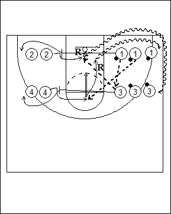

Catégorie : SHOOTS (Sh-015)
Déroulement
- Quatre files de joueurs. Une file avec ballons à hauteur de l’anneau. Une file sans ballon juste en face. Une file à hauteur de la ligne des lancers-francs; dans cette file, tous les joueurs ont un ballon sauf le premier. La quatrième file se trouve également à hauteur de la ligne des lancers-francs face à la troisième file.
- Le premier joueur de la file 1 fait la passe au premier joueur de la file 3 et place un écran pour le premier joueur de la file 2. Celui-ci reçoit le ballon du premier joueur de la file 3 et shoote. Après sa passe à 2, le premier joueur de la file 3 place un écran pour le premier joueur de la file 4 qui reçoit le ballon du deuxième joueur de la file 1 et shoote de la ligne des lancers-francs. Et ainsi de suite ...
- Après son écran, 1 va en 2; après son shoot sous l’anneau, 2 réalise le rebond et va en dribble dans la file 3; après son écran, 3 va en 4; après son shoot de la ligne des lancers-francs, 4 prend le rebond et va en dribble dans la file 1.
Coaching points
- Après chaque passe, le joueur va faire un écran à l’opposé.